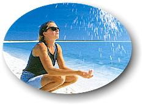

| At
Shell Beach near Monkey Mia in Western
Australia--countless tiny, white shells, as far as the
eye can see. |

|
Dolphins Down Under
11 days/10 nights
June 3 - 14, 2000
Days One and Two:
Depart Los Angeles and arrive Sydney. Connect to Perth, arriving
mid-afternoon. Shuttle to the Parkroyal Hotel. Check-in is
followed by a little time for some rest and relaxation. Re-group
for dinner and overnight.
Day Three:
Breakfast at the hotel is followed by a guided walking tour of
Fremantle, the vibrant and cosmopolitan port-town adjoining
Perth. Lunch on your own in Fremantle is followed by a return to
Perth for a free afternoon or an optional walking tour that will
explore the city described by astronauts as the 'City of
Lights due to its remote location--like a twinkling jewel in
the vast desert of Western Australia. Together, we'll explore
Kings Park, the city center and the 'artsy' area of Newtown.
Re-group for dinner at a local restaurant and an overnight at
the hotel.
Day Four:
After breakfast at the hotel, youll depart by train for
Bunbury. After a scenic two-hour ride, your first stop will be
the Bunbury Dolphin Beach where youll have plenty of time to
spend observing and possibly interacting with some of the
resident pods of dolphins found in the bay, many of whom are
regular visitors to the beach. Youll learn more about these
dolphins from those who know them best--staff members of the
Dolphin Discovery Center. Lunch will be provided in Bunbury.
Afternoon return to Perth by train. Dinner on your own with a
wide variety of restaurants to choose from, including delicious
seafood, Greek and Thai cuisine, all of which have earned Perth
a reputation for being one of Australias premiere gourmet
cities. Overnight, Perth.
Day Five:
Breakfast is followed by a day-long tour of the Margaret River
region by private coach. See small villages nestled in rolling
hills, contrasted with the dramatic coastline of the
Southwestern Australia. After a picnic lunch, youll depart
for an afternoon of whale watching from Augusta (a favorite spot
for the Southern Right Whales to migrate each year to mate and
give birth). Return to Perth. Dinner at a local restaurant.
Day Six:
Early morning flight to Monkey Mia. Arrive and transfer to
your cabin just footsteps away from the famous dolphin beach.
Breakfast at the resort restaurant, with views overlooking the
beach and the calm waters. Youll spend the remainder of the
morning and afternoon on and around the beach. Just offshore,
these Australian waters are home to an abundance of marine life
that, in addition to the famously friendly Bottlenose Dolphins,
includes the endearing (and endangered) Dugong. Lunch on your
own is followed by some free time. You might want to consider
renting a kayak or doing some snorkeling. Re-group for a sunset
cruise on the famous Shotover catamaran--a real chance
to kick back and relax as you cruise these tranquil waters in
style! Dinner and overnight, the Monkey Mia Resort.
Day Seven:
Rise and shine and head for the beach to see Monkey Mias
famous dolphins feeding and in their most interactive state. A
late morning breakfast is followed by an interesting and
educational excursion to a nearby pearl farm. Return to the
hotel for lunch on your own. This afternoon, youll have the
opportunity to explore your surroundings, which feature some of
the worlds most intriguing geography including an Aboriginal
cave dwelling or two! Return to the Monkey Mia Resort for dinner
and an overnight.
Day Eight:
Youll start the day with breakfast and, if time allows, a
little time at the beach. Then, get ready for a day-long
adventure on dry land that will take you to see some of the
highlights that make this area an UNESCO World Heritage Site.
Your tour stops will include Shell Beach, composed entirely of
white, tiny shells and absolutely no sand! The nearby village of
Denham, will be our lunch will be our lunch stop--perhaps this
is your chance to try a typical Aussie dish from the barbie.'
Next, well visit a local farmstead and enjoy some commanding
views of the region from Eagle Bluff. Return to the resort for
dinner and an overnight.
Day Nine :
Enjoy a relaxing breakfast at the resort and a little free time
at the beach before your flight back to Perth. Lunch on your
own. Connect to Sydney, arriving early evening. Dinner
in-flight. Transfer to the Southern Cross Hotel for an
overnight.
Day Ten:
Breakfast at the hotel is followed by a guided walking tour of
the city. A stunning view of the city from the Sydney Opera
House will be just one of the many highlights of your tour as
will a visit to the historic area of the city known as 'The
Rocks.' Lunch on your own (a visit to Sydneys nearby
Chinatown is recommended). Free time in the afternoon to explore
the Botanical Gardens, or perhaps a harbor ferry across to Manly
Beach; the choice is yours! Re-group for a fun farewell dinner
and an overnight.
Day Eleven:
After breakfast at the hotel, youll spend a morning at the
newly-opened Dolphin Center, located on the northern entrance of
Sydney Harbour. Lunch on your own is followed by a free
afternoon in elegant and eclectic Sydney, with a chance to visit
the Olympic Stadium or the very unique shopping district around
Kings Cross and Surry Hills. Early dinner on your own. Re-group
at the hotel in the early evening for a transfer to the Sydney
airport and final departure on your overnight flight back to the
U.S.
|